Un panneau de notes au bord droit de l'écran. Du Markdown compatible Obsidian : vos fichiers restent la vérité. Une synchro privée avec le téléphone, et une recherche par mots et par le sens, sans envoyer vos notes nulle part.
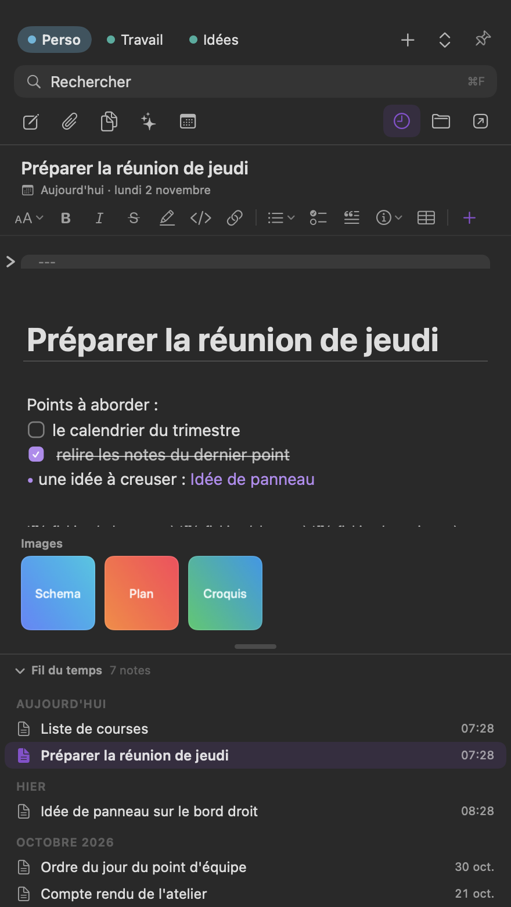
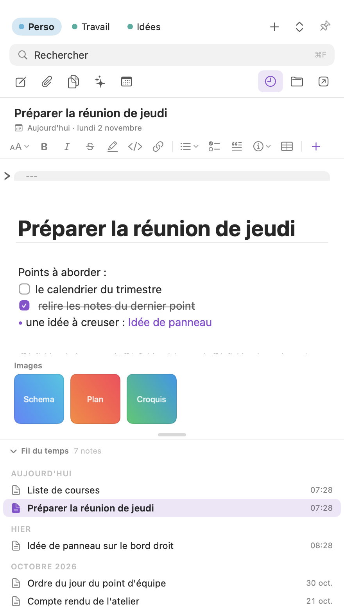
Le panneau se pose à droite, à côté de ce que vous faites. Vos notes restent à portée.
Chaque note est un fichier .md dans un dossier que vous connaissez. Obsidian l'ouvre sans Glose.
Une synchro fichier par fichier avec votre téléphone, par un serveur que vous tenez.
Par mots, ou par le sens. Tout se calcule sur le Mac : aucun texte ne part.
Neuf écrans réels de l'app, un par fonction.
Tapez ## Titre ou **gras** : les signes s'effacent dès que le curseur quitte la ligne. Le fichier reste du Markdown pur.
La recherche par mots est la réponse exacte. Elle parcourt le projet courant, ou tous les projets d'un clic.
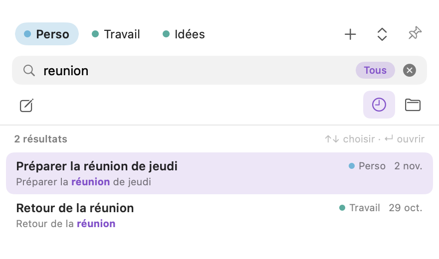
La recherche par le sens retrouve une note même si elle n'emploie pas vos mots. Elle tourne sur le Mac, avec le moteur de langue d'Apple : aucun texte ne part vers un service extérieur. Les deux recherches se lisent dans la même liste.
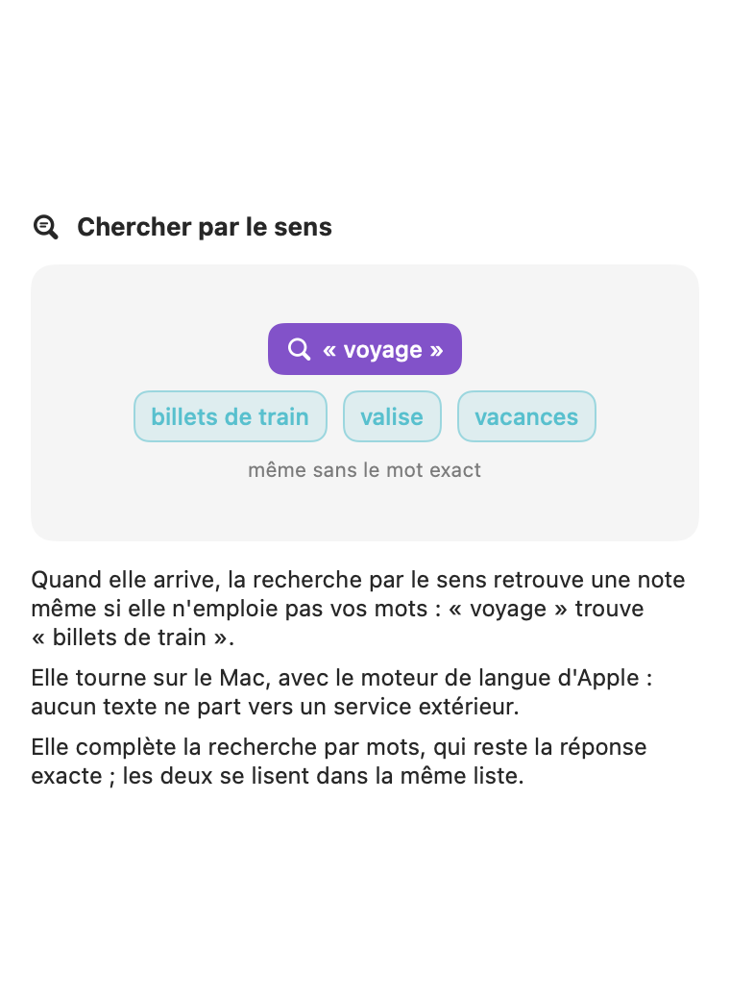
Sous une note ouverte, Glose propose des thèmes et des voisines, sans que vous ayez posé de lien. Rien n'est écrit dans vos fichiers tant que vous n'acceptez pas. Un voisin utile devient un lien [[…]] en un clic.
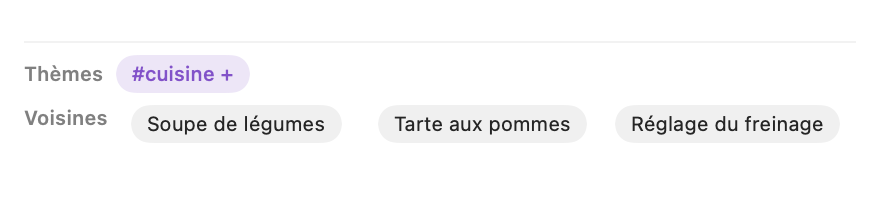
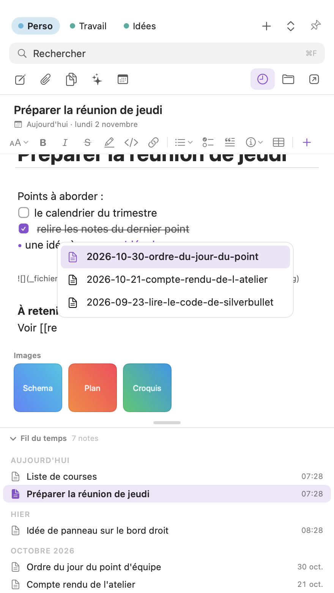
Un menu propose toutes les mises en forme, titres, encadrés, tableaux, avec leur raccourci.
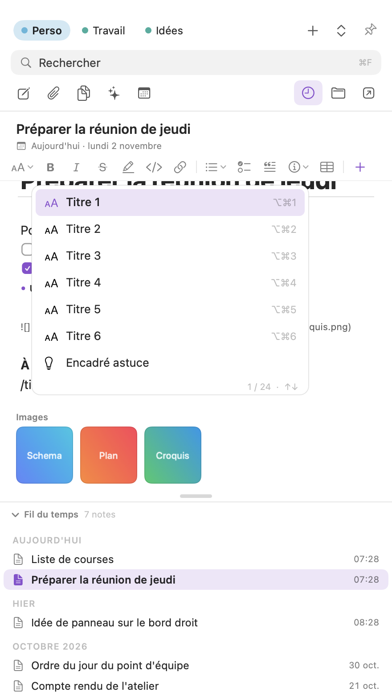
Pour corriger un texte, Glose montre chaque changement : le mot retiré, le mot proposé. Vous cochez ce que vous gardez, puis « Appliquer ». ⌘Z défait tout d'un coup.
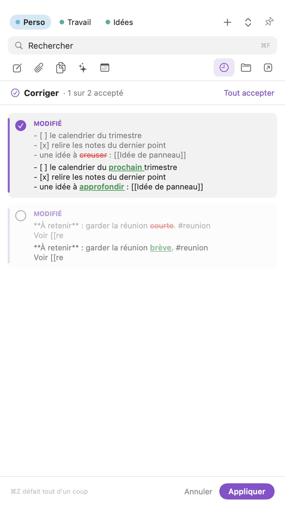
Les projets que vous cochez dans l'onglet Serveur se synchronisent avec le téléphone, fichier par fichier. Hors ligne, les modifications attendent. Modifiée des deux côtés, une note garde les deux versions : Glose ne tranche jamais à votre place.
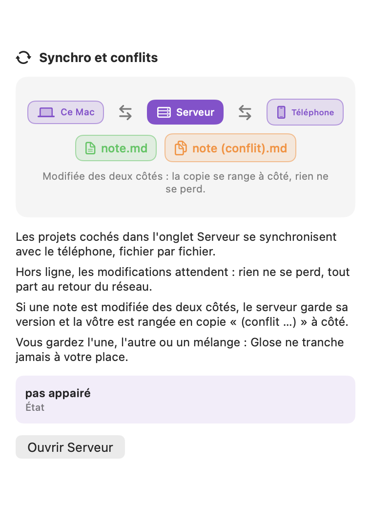
L'index de recherche et la synchro ne sont que des copies jetables : vous pouvez les effacer, les notes restent. Obsidian, un éditeur de code ou le Finder ouvrent vos notes sans Glose. Glose n'écrit un fichier que si le texte a changé.
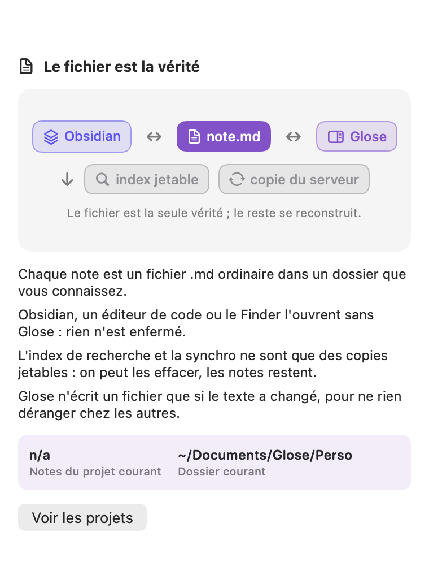
Orange : un bouton ouvre le bon réglage. Gris : facultatif, sans conséquence. Vert : accordé. Tout se règle plus tard depuis Aide, puis Droits. Un didacticiel de 7 étapes et 12 leçons illustrées accompagnent ensuite.
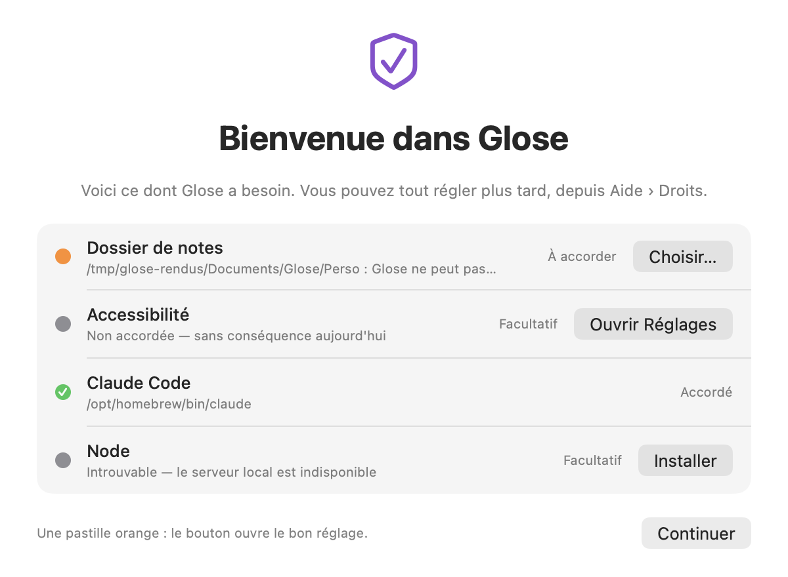
Il se pose au bord droit de l'écran. Choisissez un projet dans les onglets du haut.
Nouvelle note, puis Markdown en direct. « / » pour les blocs, « [[ » pour lier.
⌘F : par mots, puis par le sens. Voisines et thèmes sous chaque note.
Chaque chiffre porte sa source en petit. Un chiffre qui n'a pas pu être mesuré s'écrit « n/a », jamais zéro.
Sur ce banc de 30 questions, la bonne note est dans les trois premières 23 fois (76,7 %). Le moteur de langue d'Apple ne rapproche pas toutes les paraphrases : quand il manque la note, la recherche par mots la trouve.
Le moteur de notes est testé à chaque changement.
L'app se contrôle elle-même, écran par écran.
Des agents d'IA ont joué des cas limites : gros fichiers, notes Obsidian, sécurité, synchro, web.
Valeurs limites, pannes, accès simultanés, sécurité.
Chacun a joué un profil du début à la fin : créer, écrire, chercher, relier, synchroniser, ouvrir une leçon.
À lire sans détour : ces cinq parcours sont des tests simulés par des agents, pas des avis d'utilisateurs. Aucune personne réelle n'a encore donné son avis ; il n'y a donc ni témoignage ni note sur cette page.
| macOS | pris en chargemacOS 26 minimum. Pas de version pour un système plus ancien. |
|---|---|
| Obsidian | compatibleLes notes sont des fichiers .md ordinaires, ouvrables dans Obsidian sans Glose. Sur un corpus de fichiers Obsidian réenregistrés par Glose, 76 sur 76 sont restés identiques à l'octet (voir Preuves). |
| iPhone | par la web appPas d'app iPhone : le téléphone se connecte par une web app, sur le même Wi-Fi que le Mac, avec un code à 8 chiffres. |
| Signature Apple | pas encoreL'app n'est pas signée par Apple (Developer ID). Au premier lancement, macOS peut demander une confirmation avant de l'ouvrir. |
Glose n'est pas encore proposée au téléchargement. La première version est essayée en privé ; cette page sera mise à jour avec le lien quand elle sera ouverte.
D'ici là, rien à installer, et rien n'est collecté sur cette page.
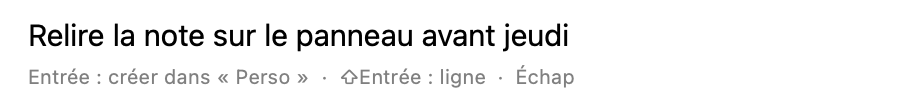